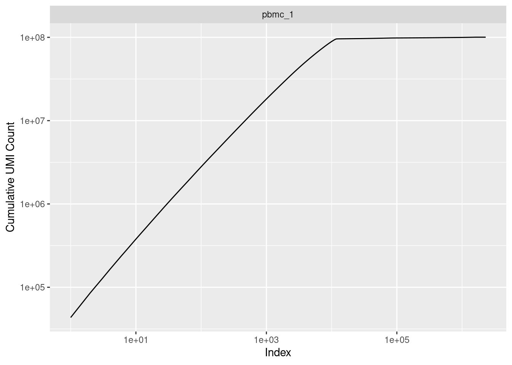
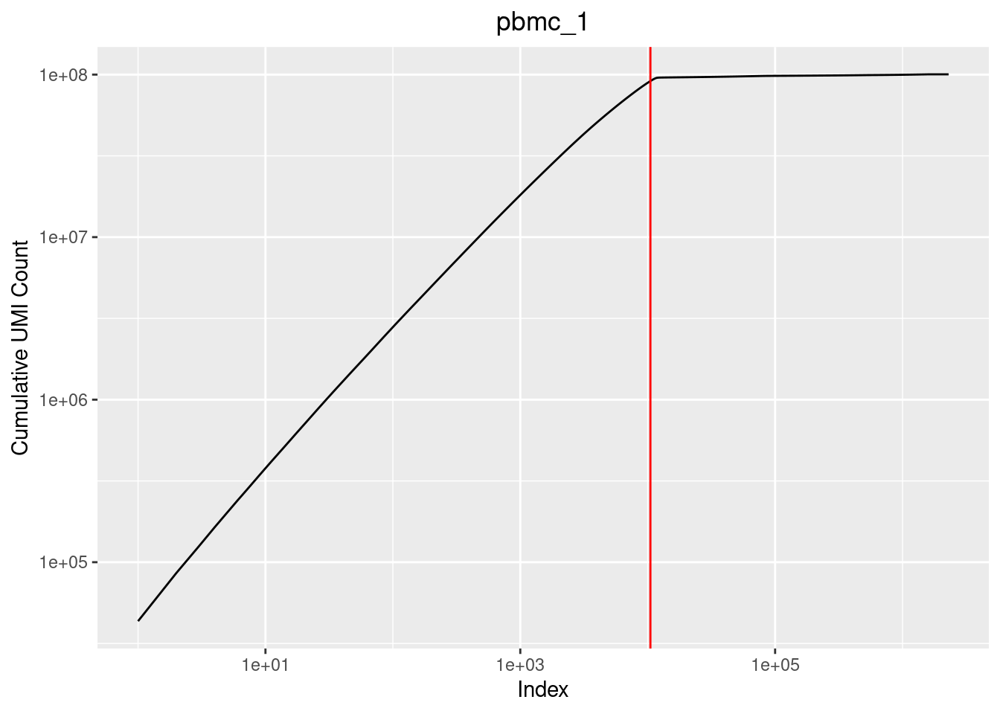
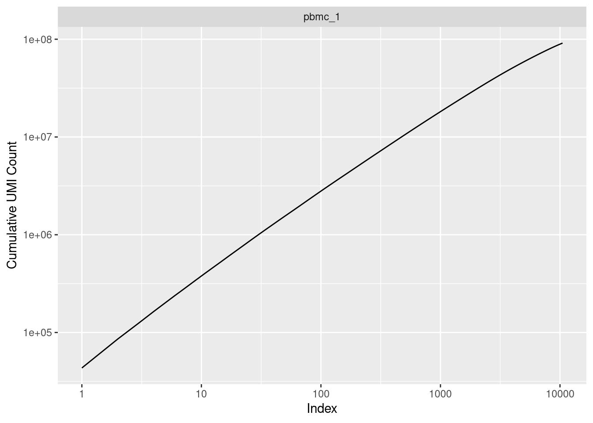
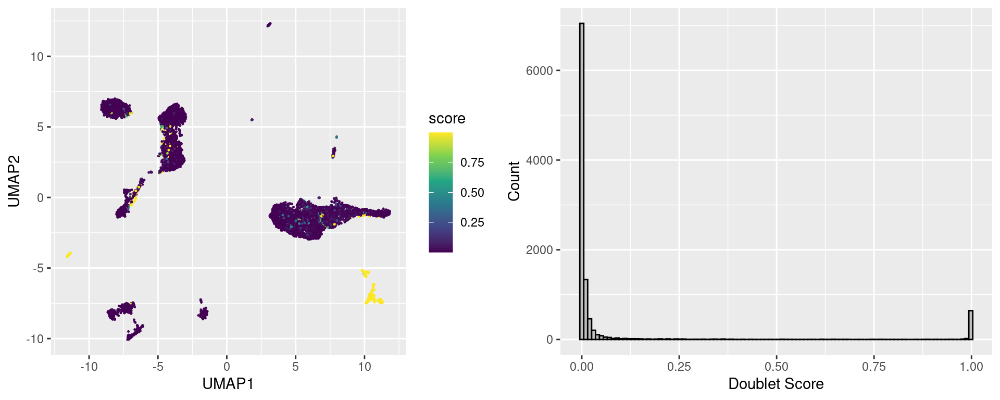
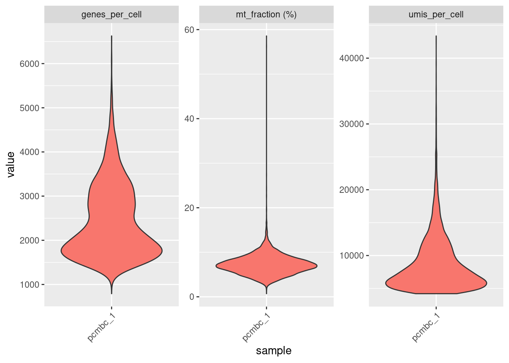
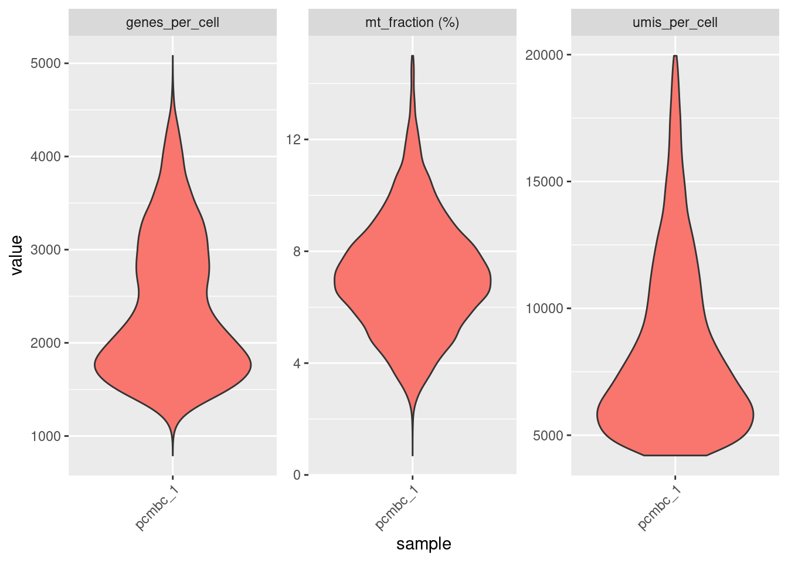

Work in progress.
The goals are:
Visualize common quality control statistic.
Determine thresholds using the QC visualizations.
Subset the cell accordingly.
knitr::opts_chunk$set(echo = TRUE)
library(reticulate)
Sys.setenv(RETICULATE_PYTHON =
"/home/pschaefer/miniconda3/envs/r-reticulate/bin/python")
timestamp <- format(Sys.time(), "%Y-%m-%d-%H-%M")
s <- 4242Loading Packages
suppressPackageStartupMessages({
library(tidyverse)
library(magrittr)
library(sparseMatrixStats)
library(scDblFinder)
library(scuttle)
library(scran)
library(scater)
library(ggside)
})if (Sys.info()["nodename"] == "CrunchyPeanut") {
input_dir <- "/mnt/sda/data/10X_pbmc_gex_10k/"
output_dir <- "/home/philipp/Bioinfo_Playground/10x_pbmc_gex_processing_output/"
if (!dir.exists(output_dir)) dir.create(output_dir)
} else {
warning("No appropriate nodename, adjust paths manually")
stop()
}list.files(input_dir)## [1] "10k_PBMC_3p_nextgem_Chromium_X_metrics_summary.csv"
## [2] "10k_PBMC_3p_nextgem_Chromium_X_raw_feature_bc_matrix.h5"
## [3] "description.txt"We will also read in the summary.csv files generated by cellranger.
read_csv(list.files(input_dir, full.names = TRUE)[
str_detect(list.files(input_dir), "summary.csv$")],
show_col_types = FALSE) %>%
mutate(across(everything(), as.character)) %>%
pivot_longer(cols=everything(), names_to="Metric", values_to="Value")Reading in the snRNA-seq data. We will read in the “raw_feature_bc_matrix.h5” matrices.
rna_raw <- Seurat::Read10X_h5(
list.files(input_dir, full.names = TRUE)[
str_detect(list.files(input_dir), "raw_feature_bc_matrix.h5$")]
)## Warning in sparseMatrix(i = indices[] + 1, p = indptr[], x = as.numeric(x
## = counts[]), : 'giveCsparse' has been deprecated; setting 'repr = "T"'
## for youstr(rna_raw)## Formal class 'dgCMatrix' [package "Matrix"] with 6 slots
## ..@ i : int [1:31489037] 6021 21098 35942 18254 22096 36565 10660 10803 6286 35057 ...
## ..@ p : int [1:2299295] 0 0 1 3 4 6 7 7 8 8 ...
## ..@ Dim : int [1:2] 36601 2299294
## ..@ Dimnames:List of 2
## .. ..$ : chr [1:36601] "MIR1302-2HG" "FAM138A" "OR4F5" "AL627309.1" ...
## .. ..$ : chr [1:2299294] "AAACCCAAGAAACACT-1" "AAACCCAAGAAACCAT-1" "AAACCCAAGAAACCCA-1" "AAACCCAAGAAACCCG-1" ...
## ..@ x : num [1:31489037] 1 1 1 1 1 1 1 1 1 1 ...
## ..@ factors : list()First we will remove all genes that are not expressed in at least 3 cells.
dim(rna_raw)## [1] 36601 2299294rna_raw <- rna_raw[sparseMatrixStats::rowSums2(rna_raw != 0) > 0, ]
dim(rna_raw)## [1] 25746 2299294Before subsetting we will create a tibble containing the metadata which we will update throughout the analysis.
coldata <- tibble::tibble(
barcode = colnames(rna_raw),
sample = "pbmc_1")Plotting log10 of the cumulative UMI counts vs the rank of the cell or rather barcode (“kneeplot”). We need to find thresholds for each sample.
purrr::map_dfr(unique(coldata$sample), function(smp) {
tibble(sample = smp,
umi_per_cell = sparseMatrixStats::colSums2(rna_raw[, coldata$barcode[coldata$sample==smp]]))
}) %>%
arrange(sample, desc(umi_per_cell)) %>%
group_by(sample) %>%
mutate(idx = seq_along(sample)) %>%
mutate(cum_umi_per_cell = cumsum(umi_per_cell)) %>%
ggplot() +
geom_line(aes(x=idx, y=cum_umi_per_cell)) +
facet_wrap(~sample, scales = "fixed") +
scale_y_log10() + scale_x_log10() +
labs(x = "Index", y = "Cumulative UMI Count")
And we will be using the following thresholds (determined by visual inspection). Especially for “sm027_Tel_5c_20211123” there is a very obvious knee, for the other samples the thresholds are a little bit arbitrary (like everything in bioinformatics).
thresholds <- c("pbmc_1" = 10.5e3)
thresholds## pbmc_1
## 10500p.list <- purrr::map(unique(coldata$sample), function(smp) {
tibble::tibble(
sample = smp,
umi_per_cell = sparseMatrixStats::colSums2(rna_raw[, coldata$barcode[coldata$sample==smp]])) %>%
arrange(sample, desc(umi_per_cell)) %>%
group_by(sample) %>%
mutate(idx = seq_along(sample)) %>%
mutate(cum_umi_per_cell = cumsum(umi_per_cell)) %>%
ggplot() +
geom_line(aes(x=idx, y=cum_umi_per_cell)) +
geom_vline(xintercept = thresholds[smp], color = "red") +
scale_y_log10() + scale_x_log10() +
labs(x = "Index", y = "Cumulative UMI Count", title = smp) +
theme(plot.title = element_text(hjust = 0.5))
})
do.call(gridExtra::grid.arrange, p.list)
Lastly we subset the count matrices based on these results.
cell_qc <- purrr::map_dfr(unique(coldata$sample), function(smp) {
tibble(sample = smp,
sum_umis = sparseMatrixStats::colSums2(rna_raw[, coldata$barcode[coldata$sample==smp]]),
detected_genes = sparseMatrixStats::colSums2(rna_raw[, coldata$barcode[coldata$sample==smp]] != 0),
barcode = coldata$barcode[coldata$sample==smp],
threshold = thresholds[smp]) }) %>%
arrange(sample, desc(sum_umis)) %>%
group_by(sample) %>%
mutate(rank = seq_along(sample)) %>%
mutate(cum_umi_per_cell = cumsum(sum_umis)) %>%
mutate(non_empty = ifelse(rank <= threshold, TRUE, FALSE))
coldata <- coldata %>%
dplyr::left_join(cell_qc, by=c("sample", "barcode")) %>%
dplyr::select(sample, barcode, sum_umis, detected_genes, non_empty)
dim(rna_raw)## [1] 25746 2299294rna <- rna_raw[,coldata %>% dplyr::filter(non_empty) %>% dplyr::pull(barcode)]
coldata <- coldata %>% dplyr::filter(non_empty)
dim(rna)## [1] 25746 10500Check again. And I think it looks ok now.
purrr::map_dfr(unique(coldata$sample), function(smp) {
tibble(sample = smp,
umi_per_cell = sparseMatrixStats::colSums2(rna[, coldata$barcode[coldata$sample==smp]]))
}) %>%
arrange(sample, desc(umi_per_cell)) %>%
group_by(sample) %>%
mutate(idx = seq_along(sample)) %>%
mutate(cum_umi_per_cell = cumsum(umi_per_cell)) %>%
ggplot() +
geom_line(aes(x=idx, y=cum_umi_per_cell)) +
facet_wrap(~sample, scales = "fixed") +
scale_y_log10() + scale_x_log10() +
labs(x = "Index", y = "Cumulative UMI Count")
scDblFinderWe will use scDblFinder as this package it implemented in R and seems to be better than scrublet (according to their vignette at least, but I guess their comparison might be biased!). Usually these tools simulate doublets and check how similar your actual cells are to these simulated doublets.
See the description/vignette of the tool here:
To use the tools we will temporarily create a single cell experiment object.
dbr <- 0.076
print(paste0("Using an expected doublet rate of: ", dbr))## [1] "Using an expected doublet rate of: 0.076"sce <- SingleCellExperiment(list(counts = rna))
sce <- logNormCounts(sce)
dec <- modelGeneVar(sce)
hvgs <- getTopHVGs(dec, n=2000)
set.seed(s)
sce <- runPCA(sce, ncomponents=30, subset_row=hvgs)
sce <- runUMAP(sce, dimred="PCA")
#scores <- computeDoubletDensity(sce, subset.row=hvgs)
sce <- scDblFinder(sce, dbr=dbr, iter=1)
scores <- sce$scDblFinder.score
classification <- sce$scDblFinder.class
barcode <- rownames(sce@colData)
# prepare plots
p1 <- tibble::tibble(cell = names(scores), score = scores,
UMAP1 = reducedDim(sce, "UMAP")[,1],
UMAP2 = reducedDim(sce, "UMAP")[,2]) %>%
ggplot() +
geom_point(aes(x=UMAP1, y=UMAP2, color=score), size=0.2) +
scale_color_viridis_c()
p2 <- ggplot() +
geom_histogram(aes(scores), bins = 100, fill="grey", color="black") +
labs(y = "Count", x = "Doublet Score")
# use cowplot for plotting the grid
cowplot::plot_grid(p1, p2)
doublet_scores <- tibble::tibble(barcode = barcode,
score = scores,
classification = classification)
coldata <- coldata %>%
left_join(doublet_scores, by="barcode")Check how many predicted doublets per sample using our threshold set above. Let’s keep the doublet scores and we will not remove/mask any cells, but rather check later on whether doublets are particularly enriched in any cluster we get.
coldata %>%
dplyr::count(sample, classification)Let’s look at some common QC statistics:
However, using mitochondrial genes probably makes no sense looking at single-nuc data. See this paper for a short comparison between single-cell and single-nuc RNA-sequencing. (1) Furthermore, we do not know the names of the mitochondrial gene here, most likely they are gene starting with "mt-/_".
mito_genes <-
rownames(rna)[grep("^MT-", rownames(rna))]
mito_genes## [1] "MT-ND1" "MT-ND2" "MT-CO1" "MT-CO2" "MT-ATP8" "MT-ATP6"
## [7] "MT-CO3" "MT-ND3" "MT-ND4L" "MT-ND4" "MT-ND5" "MT-ND6"
## [13] "MT-CYB"Computing the QC stats.
Looking at the bottom/left tail of the distributions one might argue that the cutoff with regards to the number of UMIs is a little bit too strict for sample “sm023.”
qc_stats_before <- tibble::tibble(
sample = "pcmbc_1",
barcode = colnames(rna),
umis_per_cell = Matrix::colSums(rna),
genes_per_cell = Matrix::colSums(rna != 0),
mt_fraction = Matrix::colSums(rna[mito_genes, ]) / Matrix::colSums(rna) * 100
)
qc_stats_before %>%
pivot_longer(cols = !c(sample, barcode), names_to = "stat") %>%
mutate(stat = ifelse(stat=="mt_fraction", "mt_fraction (%)", stat)) %>%
ggplot() +
geom_violin(aes(x=sample, y=value, fill=sample)) +
facet_wrap(~ stat, scales = "free") +
theme(axis.text.x = element_text(angle = 45, hjust = 1),
legend.position = "none")
Generally speaking the initial QC should not be too stringent.
Removing cells with:
Let’s add the QC thresholds to our coldata.
coldata <- coldata %>%
mutate(sum_umis_in_bound = (sum_umis <= 20000),
detected_genes_in_bound = (detected_genes <= 9000),
mt_fraction = Matrix::colSums(rna[mito_genes, ]) /
Matrix::colSums(rna) * 100,
mt_fraction_in_bound = mt_fraction <= 15) %>%
rowwise() %>%
mutate(qc_pass = all(non_empty, sum_umis_in_bound,
detected_genes_in_bound, mt_fraction_in_bound)) %>%
ungroup()
coldata %>%
dplyr::filter(qc_pass) %>%
glimpse()## Rows: 10,224
## Columns: 12
## $ sample <chr> "pbmc_1", "pbmc_1", "pbmc_1", "pbmc_1",…
## $ barcode <chr> "AAACCCAAGGCCCAAA-1", "AAACCCAAGTAATACG…
## $ sum_umis <dbl> 12143, 7811, 9741, 5561, 7399, 4593, 70…
## $ detected_genes <dbl> 3022, 2667, 2934, 1525, 2078, 1550, 252…
## $ non_empty <lgl> TRUE, TRUE, TRUE, TRUE, TRUE, TRUE, TRU…
## $ score <dbl> 0.0033944435, 0.0063149929, 0.021740824…
## $ classification <fct> singlet, singlet, singlet, singlet, sin…
## $ sum_umis_in_bound <lgl> TRUE, TRUE, TRUE, TRUE, TRUE, TRUE, TRU…
## $ detected_genes_in_bound <lgl> TRUE, TRUE, TRUE, TRUE, TRUE, TRUE, TRU…
## $ mt_fraction <dbl> 6.406983, 6.311612, 8.643876, 5.196907,…
## $ mt_fraction_in_bound <lgl> TRUE, TRUE, TRUE, TRUE, TRUE, TRUE, TRU…
## $ qc_pass <lgl> TRUE, TRUE, TRUE, TRUE, TRUE, TRUE, TRU…qc_stats_after <- tibble::tibble(
sample = "pcmbc_1",
barcode = colnames(rna[,coldata$barcode[coldata$qc_pass]]),
umis_per_cell = Matrix::colSums(rna[,coldata$barcode[coldata$qc_pass]]),
genes_per_cell = Matrix::colSums(rna[,coldata$barcode[coldata$qc_pass]] != 0),
mt_fraction = Matrix::colSums(rna[,coldata$barcode[coldata$qc_pass]][mito_genes, ]) / Matrix::colSums(rna[,coldata$barcode[coldata$qc_pass]]) * 100
)
qc_stats_after %>%
pivot_longer(cols = !c(sample, barcode), names_to = "stat") %>%
mutate(stat = ifelse(stat=="mt_fraction", "mt_fraction (%)", stat)) %>%
ggplot() +
geom_violin(aes(x=sample, y=value, fill=sample)) +
facet_wrap(~ stat, scales = "free") +
theme(axis.text.x = element_text(angle = 45, hjust = 1),
legend.position = "none")
saveRDS(rna,
paste0(output_dir, timestamp, "10x_pbmc_processed_rna_counts.RDS"))
saveRDS(coldata,
paste0(output_dir, timestamp, "10x_pbmc_processed_coldata.RDS"))
save.image(file = paste0(output_dir, "Latest_10x_pbmc_processed.RData"))